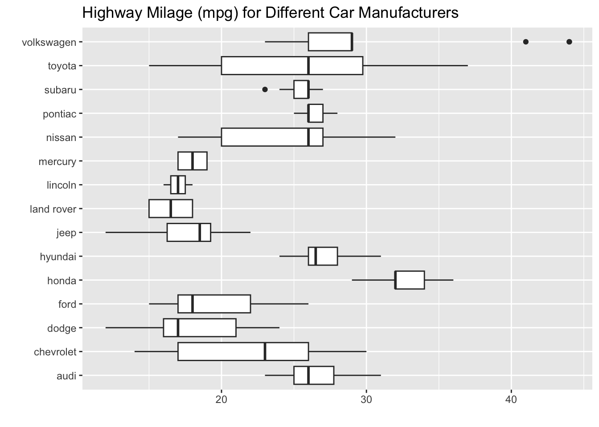
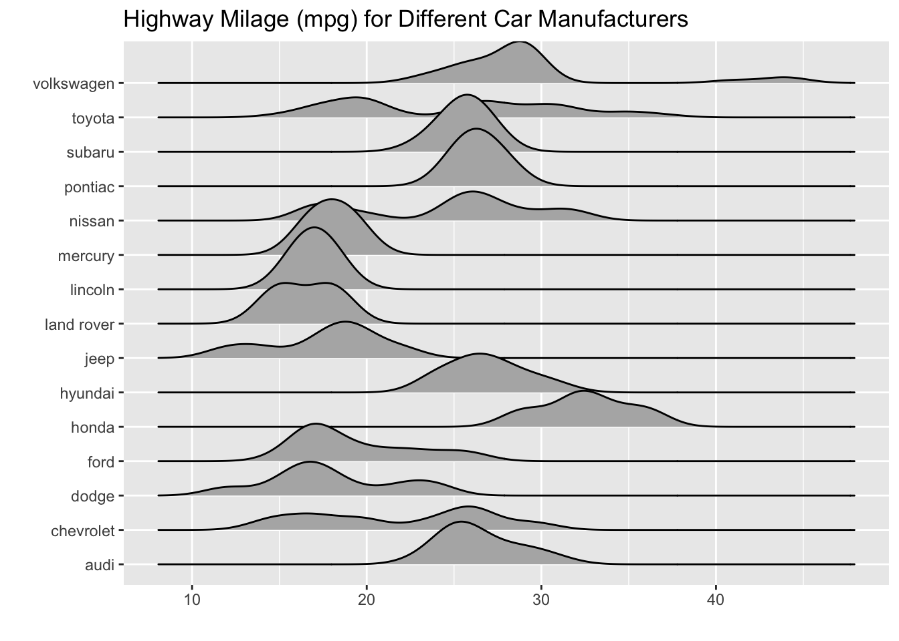

library(tidyverse)
library(ggridges)Quarto
First, let’s make sure you know how to use Markdown formatting to style a Quarto document.
Make this text bold.
Make this text italicized.
Make these into a bullet point list:
Apples Bananas *Potatoes
Edit the YAML to remove warning messages from being output in the rendered HTML file
Using code chunk options, make it so this chunk shows the plot but not the source code:

- Using code chunk options, remove the messages about bandwidth
geom_density_ridges()chose to use:
ggplot(data = mpg,
mapping = aes(y = manufacturer, x = hwy)) +
geom_density_ridges() +
labs(x = "",
y = "",
title = "Highway Milage (mpg) for Different Car Manufacturers"
)
- Using code chunk options, make it so that these plots are printed side-by-side:
ggplot(data = mpg,
mapping = aes(y = manufacturer, x = hwy)) +
geom_boxplot() +
labs(x = "",
y = "",
title = "Highway Milage (mpg) for Different Car Manufacturers"
)
ggplot(data = mpg,
mapping = aes(y = manufacturer, x = hwy)) +
geom_density_ridges() +
labs(x = "",
y = "",
title = "Highway Milage (mpg) for Different Car Manufacturers"
)Picking joint bandwidth of 1.31

- Using code chunk options, make it so this chunk shows the code but not the output:
2 + 2- Using code chunk options, make it so the file can still knit even though this chunk has an error
2 + aError: object 'a' not found- Using code chunk options, create a descriptive
labelfor each of the code chunks above.
Data Wrangling Review
Since you’ve already seen some ggplots, let’s do a bit of review on data handling. In this class, we will exclusively make use of tools from the tidyverse suite of packages to perform our data cleaning and wrangling operations. If you are less familiar with these packages or it’s been some time since you used them, I would strongly recommend referencing the function documentation!
For these problems, we will continue to work with the mpg data frame, making various changes to the data to clean it up.
- The
flvariable describes the type of fuel for each car, with levels:p,r,e,d, andc. Do some research into what each of these labels mean! Then, use theif_else()function to create a new variable (fuel_type) with two levels:petrol(any car using petrolium-based gas) andalternative energy(any car not using petrolium-based gas).
glimpse(mpg)Rows: 234
Columns: 11
$ manufacturer <chr> "audi", "audi", "audi", "audi", "audi", "audi", "audi", "…
$ model <chr> "a4", "a4", "a4", "a4", "a4", "a4", "a4", "a4 quattro", "…
$ displ <dbl> 1.8, 1.8, 2.0, 2.0, 2.8, 2.8, 3.1, 1.8, 1.8, 2.0, 2.0, 2.…
$ year <int> 1999, 1999, 2008, 2008, 1999, 1999, 2008, 1999, 1999, 200…
$ cyl <int> 4, 4, 4, 4, 6, 6, 6, 4, 4, 4, 4, 6, 6, 6, 6, 6, 6, 8, 8, …
$ trans <chr> "auto(l5)", "manual(m5)", "manual(m6)", "auto(av)", "auto…
$ drv <chr> "f", "f", "f", "f", "f", "f", "f", "4", "4", "4", "4", "4…
$ cty <int> 18, 21, 20, 21, 16, 18, 18, 18, 16, 20, 19, 15, 17, 17, 1…
$ hwy <int> 29, 29, 31, 30, 26, 26, 27, 26, 25, 28, 27, 25, 25, 25, 2…
$ fl <chr> "p", "p", "p", "p", "p", "p", "p", "p", "p", "p", "p", "p…
$ class <chr> "compact", "compact", "compact", "compact", "compact", "c…mpg$fl [1] "p" "p" "p" "p" "p" "p" "p" "p" "p" "p" "p" "p" "p" "p" "p" "p" "p" "p"
[19] "r" "e" "r" "r" "r" "p" "p" "p" "p" "p" "r" "e" "r" "d" "r" "r" "r" "r"
[37] "r" "r" "r" "r" "r" "r" "r" "e" "r" "r" "r" "r" "r" "r" "r" "r" "r" "r"
[55] "e" "r" "r" "r" "r" "e" "r" "r" "r" "r" "r" "e" "r" "r" "r" "e" "r" "r"
[73] "r" "r" "r" "r" "r" "r" "r" "r" "r" "r" "r" "r" "r" "r" "r" "r" "r" "r"
[91] "r" "r" "r" "r" "r" "r" "r" "r" "p" "r" "r" "r" "p" "r" "r" "r" "c" "p"
[109] "r" "r" "r" "r" "r" "r" "r" "r" "r" "r" "r" "r" "r" "r" "d" "r" "r" "r"
[127] "e" "r" "r" "p" "p" "r" "r" "p" "r" "p" "r" "r" "r" "r" "r" "r" "r" "r"
[145] "r" "p" "p" "r" "r" "p" "r" "r" "p" "p" "r" "p" "r" "r" "p" "r" "r" "r"
[163] "p" "r" "p" "r" "r" "r" "r" "p" "r" "p" "r" "r" "r" "r" "r" "r" "r" "r"
[181] "r" "r" "r" "r" "r" "r" "r" "r" "r" "r" "r" "r" "r" "r" "r" "r" "r" "r"
[199] "r" "r" "r" "r" "r" "r" "r" "r" "r" "r" "r" "p" "p" "r" "d" "r" "r" "p"
[217] "p" "r" "r" "r" "r" "d" "d" "r" "r" "r" "r" "p" "p" "p" "p" "p" "p" "p"mpg |>
mutate(fuel_type = if_else(
fl == "p",
"petrol",
"alternative energy"))# A tibble: 234 × 12
manufacturer model displ year cyl trans drv cty hwy fl class
<chr> <chr> <dbl> <int> <int> <chr> <chr> <int> <int> <chr> <chr>
1 audi a4 1.8 1999 4 auto… f 18 29 p comp…
2 audi a4 1.8 1999 4 manu… f 21 29 p comp…
3 audi a4 2 2008 4 manu… f 20 31 p comp…
4 audi a4 2 2008 4 auto… f 21 30 p comp…
5 audi a4 2.8 1999 6 auto… f 16 26 p comp…
6 audi a4 2.8 1999 6 manu… f 18 26 p comp…
7 audi a4 3.1 2008 6 auto… f 18 27 p comp…
8 audi a4 quattro 1.8 1999 4 manu… 4 18 26 p comp…
9 audi a4 quattro 1.8 1999 4 auto… 4 16 25 p comp…
10 audi a4 quattro 2 2008 4 manu… 4 20 28 p comp…
# ℹ 224 more rows
# ℹ 1 more variable: fuel_type <chr>- The
drvvariable describes if the car has front drive (f), rear drive (r), or four wheel drive (4). Let’s make better labels for these values! Specifically, use thecase_when()function to change thedrvvarible to have the following levels:front,rear,four wheel.
mpg |>
mutate(drv = case_when(
drv == "f" ~ "front",
drv == "r" ~ "rear",
drv == "4" ~ "four wheel"
))# A tibble: 234 × 11
manufacturer model displ year cyl trans drv cty hwy fl class
<chr> <chr> <dbl> <int> <int> <chr> <chr> <int> <int> <chr> <chr>
1 audi a4 1.8 1999 4 auto… front 18 29 p comp…
2 audi a4 1.8 1999 4 manu… front 21 29 p comp…
3 audi a4 2 2008 4 manu… front 20 31 p comp…
4 audi a4 2 2008 4 auto… front 21 30 p comp…
5 audi a4 2.8 1999 6 auto… front 16 26 p comp…
6 audi a4 2.8 1999 6 manu… front 18 26 p comp…
7 audi a4 3.1 2008 6 auto… front 18 27 p comp…
8 audi a4 quattro 1.8 1999 4 manu… four… 18 26 p comp…
9 audi a4 quattro 1.8 1999 4 auto… four… 16 25 p comp…
10 audi a4 quattro 2 2008 4 manu… four… 20 28 p comp…
# ℹ 224 more rows(string split + remove extra “)” ) 13. The trans variable contains two pieces of information, (1) the transmission style (auto or manual) and the specific type of transmission (e.g., l5, m5). Using the str_split() function, create a new variable (trans_type) containing the specific type of transmission of each car. Once you’ve made this new variable, use the rename() function to change the name of the trans column to trans_style.
Hint: You will need to deal with the stray parenthesis!
mpg |>
mutate(
trans_split = str_split(trans, "\\(", n = 2),
trans = map_chr(trans_split, 1),
trans_type = map_chr(trans_split, ~str_remove(.[2], "\\)"))
) |>
select(-trans_split) |>
rename(trans_style = trans)# A tibble: 234 × 12
manufacturer model displ year cyl trans_style drv cty hwy fl
<chr> <chr> <dbl> <int> <int> <chr> <chr> <int> <int> <chr>
1 audi a4 1.8 1999 4 auto f 18 29 p
2 audi a4 1.8 1999 4 manual f 21 29 p
3 audi a4 2 2008 4 manual f 20 31 p
4 audi a4 2 2008 4 auto f 21 30 p
5 audi a4 2.8 1999 6 auto f 16 26 p
6 audi a4 2.8 1999 6 manual f 18 26 p
7 audi a4 3.1 2008 6 auto f 18 27 p
8 audi a4 quattro 1.8 1999 4 manual 4 18 26 p
9 audi a4 quattro 1.8 1999 4 auto 4 16 25 p
10 audi a4 quattro 2 2008 4 manual 4 20 28 p
# ℹ 224 more rows
# ℹ 2 more variables: class <chr>, trans_type <chr>Getting to know your classmates
- Find someone who took Stat 331 from a different professor than you. Compare your experiences. Tell me their name and professor. List one or two things that you think you learned more about, and one or two things that they learned more about.
I talked to Lucas who took 331 with Dr.Lund. A major difference between our classes was that his class did not use markdown or quarto for their assignments. His class also focused more on regression and statistical analysis n r than data wrangling, visualization, and function writing.
- Find someone in the class who does not share your birth month. Tell me their name and birthday, and use R to find out how many days apart your birthdays are.
library(lubridate)
start_date <- ymd("2024-08-30")
end_date <- ymd("2024-09-22")
end_date - start_dateTime difference of 23 daysZach’s birthday is August 30th. Mine is September 22nd. There are 23 days between our birthdays.
Citation
BibTeX citation:
@online{potkey2025,
author = {Potkey, Sydney},
title = {Lab 1},
date = {2025-05-04},
url = {https://SydneyPotkey.github.io/Posts/05_04_25_Lab1/},
langid = {en}
}
For attribution, please cite this work as:
Potkey, Sydney. 2025. “Lab 1.” May 4, 2025. https://SydneyPotkey.github.io/Posts/05_04_25_Lab1/.